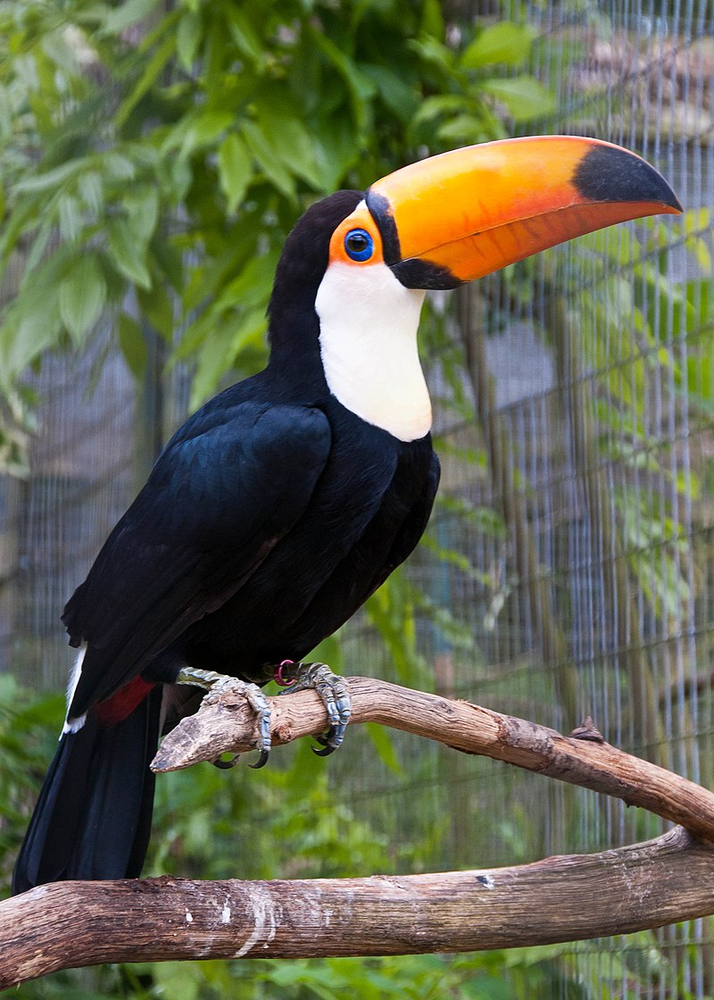
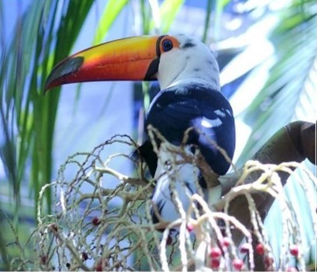
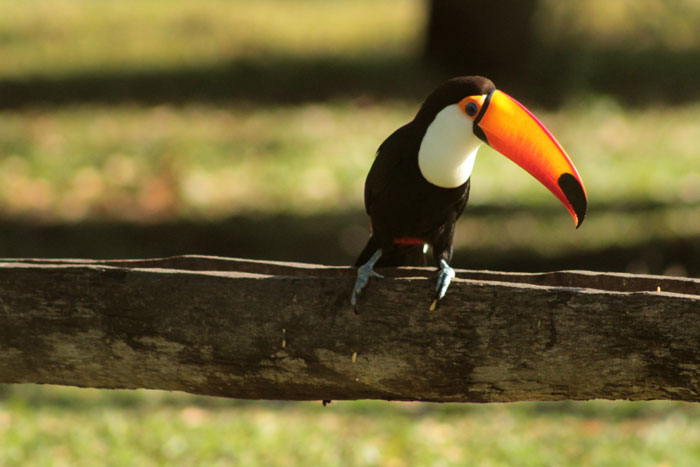

TUCANO TOCO
da família RamphastidaeA característica mais notável da espécie é o grande bico alaranjado, que pode medir 22 cm. O bico é constituído de tecido ósseo esponjoso, formando uma estrutura não maciça e areada como um favo-de-mel. Isso torna o bico mais leve e, portanto, não dificulta o voo.
Estudos realizados comprovaram que o seu bico também serve com um dispersor natural de calor, devido ao número de vasos sanguíneos nele presentes em contato com o ambiente.
É encontrado nos dosséis das florestas tropicais da América do Sul, desde as Guianas até o norte da Argentina e é o único tucano que pode ser encontrado em campos abertos, como o cerrado, e na amazônia.
Sua distribuição ocorre desde o Piauí, Goiás͵ Tocantins, Mato Grosso, Minas Gerais até o extremo norte do Rio Grande do Sul. No litoral, está presente desde o Rio de Janeiro até Santa Catarina.
"É um animal que alimenta-se de insetos, lagartos, ovos, filhotes de outras aves e, principalmente, frutos. Seu hábito alimentar é diurno. Costuma descer ao solo para aproveitar-se dos frutos que estejam caídos."
- Reino: Animalia
- Filo: Chordata
- Classe: aves
- Ordem: Piciformes
- Família: Ramphastos
Sua reprodução ocorre no final da primavera e a fêmea bota de 4 a 6 ovos em ninhos localizados no alto dos troncos das árvores. O casal se reveza na tarefa de chocar os ovos, os quais eclodem entre 16 e 20 dias.
Quando nascem, sua aparência é desproporcional; seu bico é grande e o corpo, pequeno; os olhos só abrem após três semanas e os pais cuidam de seus filhotes até eles saírem dos ninhos, o que ocorre em seis semanas.
